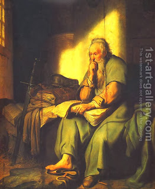

Yoma 10 - Mezuzah for the High Priest
God's presence was more palpable in the First Temple than in the Second one. One reason for it is that the Jews did not go up en mass to the Land of Israel - this is the opinion of Resh Lakish. However, Rabbi Yochanan disagrees and says that even if that had gone, it would not help - based on the phrase " God will beautify Greece, but His Presence will be with the sons of Shem ." This means that although the Persians, who are considered the descendants of Greece, built a beautiful Temple, God's presence still dwelt only in the First Temple, which was built wholly by the Jews. The Talmud then discussed the fates of the states and nations based on their role in the building or destruction of the Temple.
Did the chamber in which the High Priest lived for seven days before Yom Kippur have a mezuzah? Some say that a mezuzah was required there only for those seven days, but they still kept it throughout the year, lest they forget to put it on, or lest the people say that the High Priest is locked in a prison. Others say even those seven days are a disagreement: even though the High Priest did not choose to live there but was forced to, it is still considered a valid dwelling which needs a mezuzah - so say the Sages, while Rabbi Yehudah says that it was not considered a proper dwelling and the mezuzah was not required. All agree though that practically it still was there.
Art: In prison By Rembrandt Van Rijn